元パティシエの、手作りのパンとお菓子
田舎のちいさな店で、
粉といっしょにあそぶ。
千葉県山武市松尾町。パンとお菓子を手でつくる、ちいさなお店です。(コンセプト文は制作側の案です)
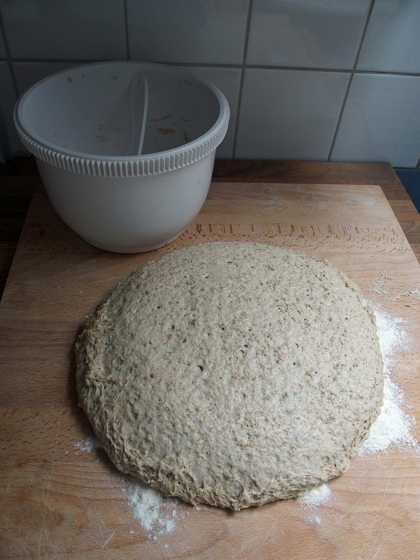
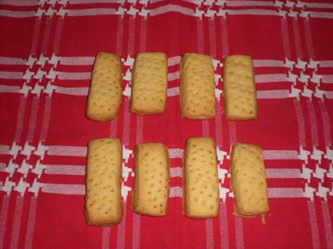
お店について
こなあそびは、Instagramのプロフィールで「元パティシエが作る」「手作りのパンとお菓子のお店」「田舎にできたちいさ〜なお店」と紹介されています。
パンやお菓子のほか、期間限定・気まぐれのスイーツ、ご注文のクッキー、お祝い事用のケーキなども案内されています。マルシェなどのイベントにも出店されているようです。
店名の意味や開店の経緯は確認できていません。「粉」と「あそび」を重ねたイメージは制作側の想像で、お店の公式な説明ではありません。
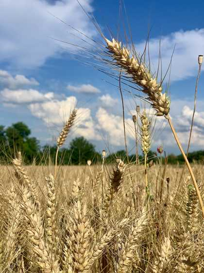

メニュー・ご提供
最新の内容はInstagramでご確認ください。
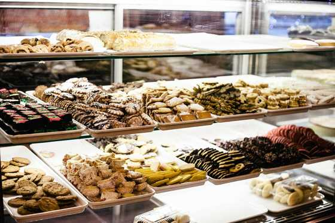

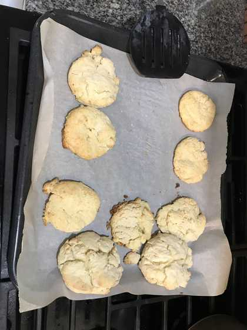
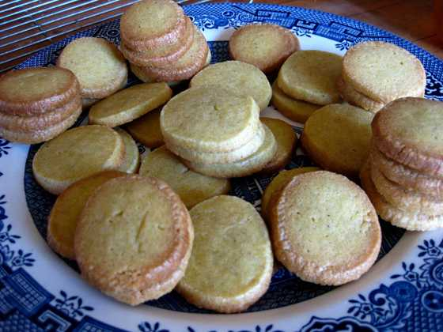
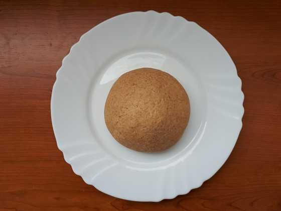
口コミ
以下は制作側が作成したイメージ例で、実際のお客様の声ではありません。
イメージ例
「ここにお客様のひとことを載せる予定です。」というイメージの欄です。
イメージ例
ご来店後の感想が並ぶ形を想定した、見本の文章です。
イメージ例
お店からのお返事も添えられる形を想定した、見本の文章です。
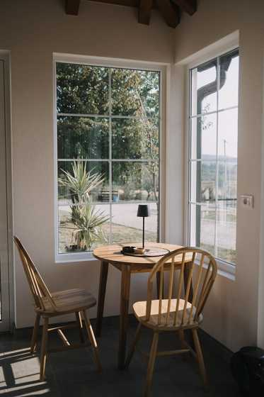
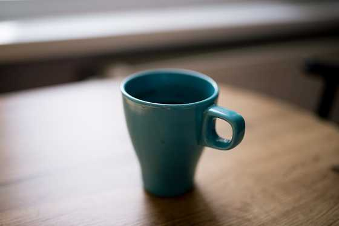
アクセス
〒289-1502 千葉県山武市松尾町引越136
電話: 準備中
Instagram: @conaa__sobi
地図は住所をもとに表示しています。位置がずれる場合があります。
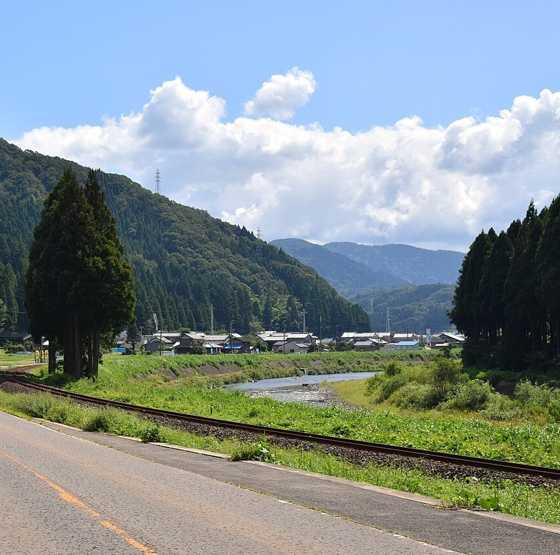
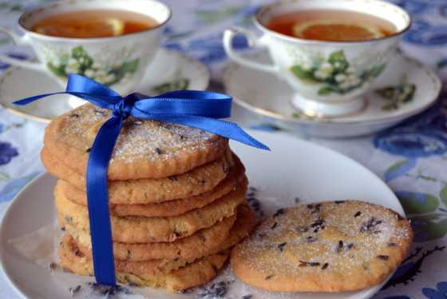
掲載写真はフリー素材のイメージ写真で、こなあそびの実際の店舗・商品・風景ではありません。他地域で撮影されたもの、撮影地が不明なものを含みます。